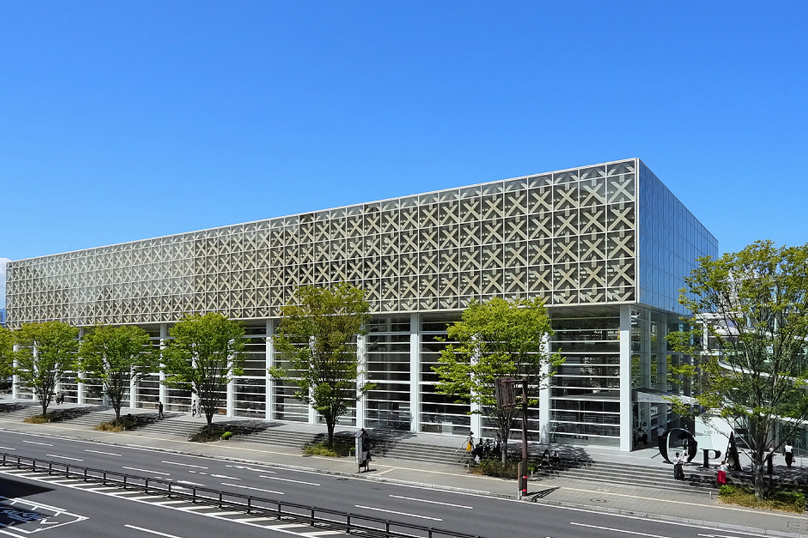
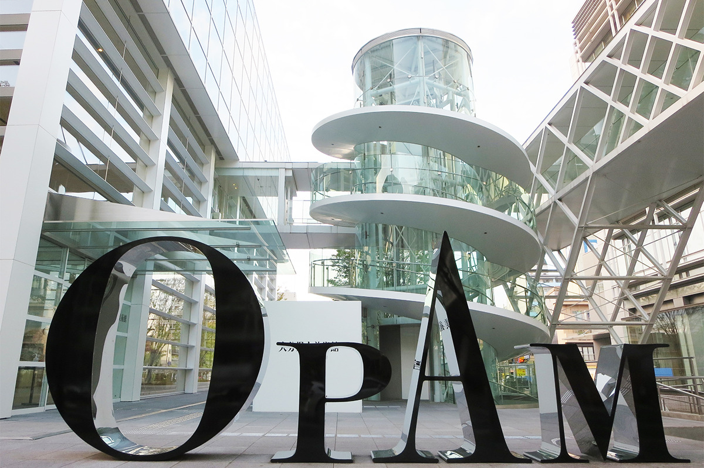
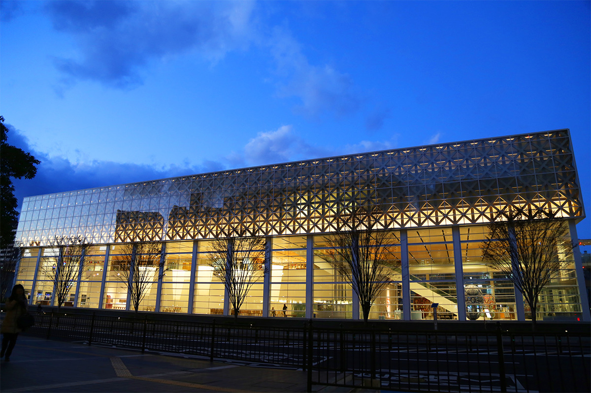
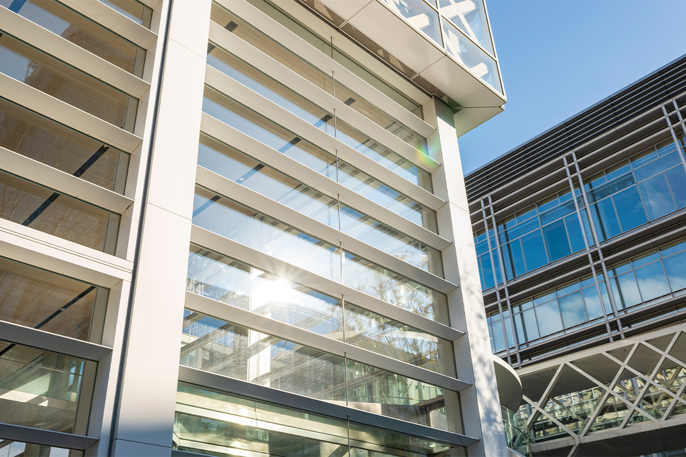
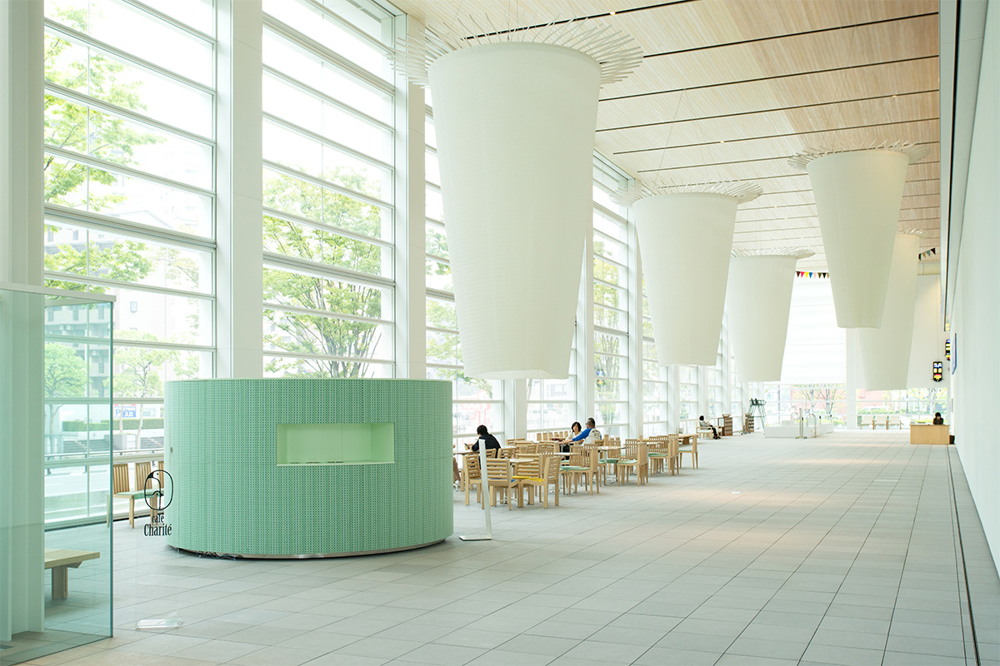
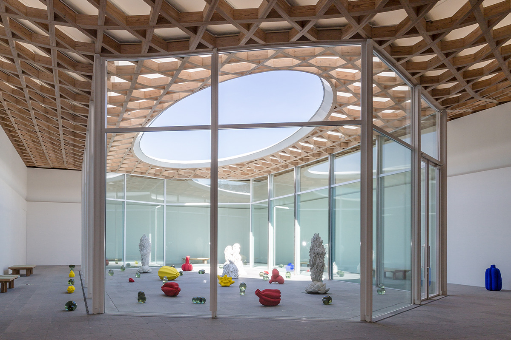
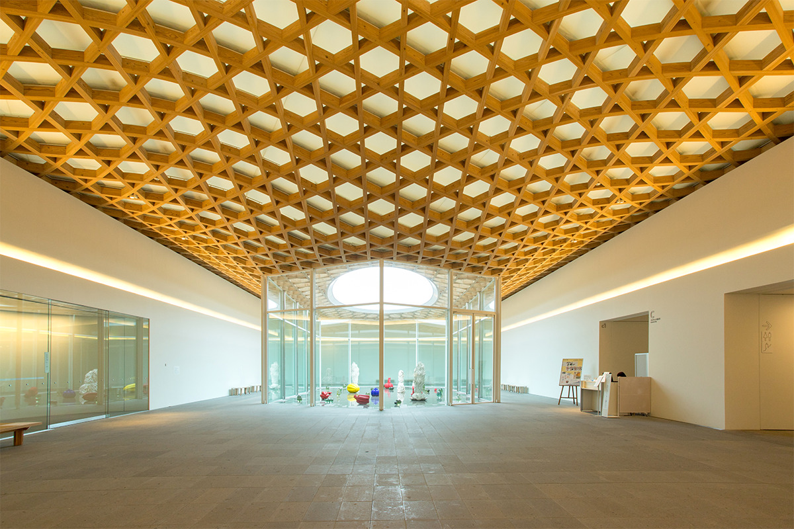
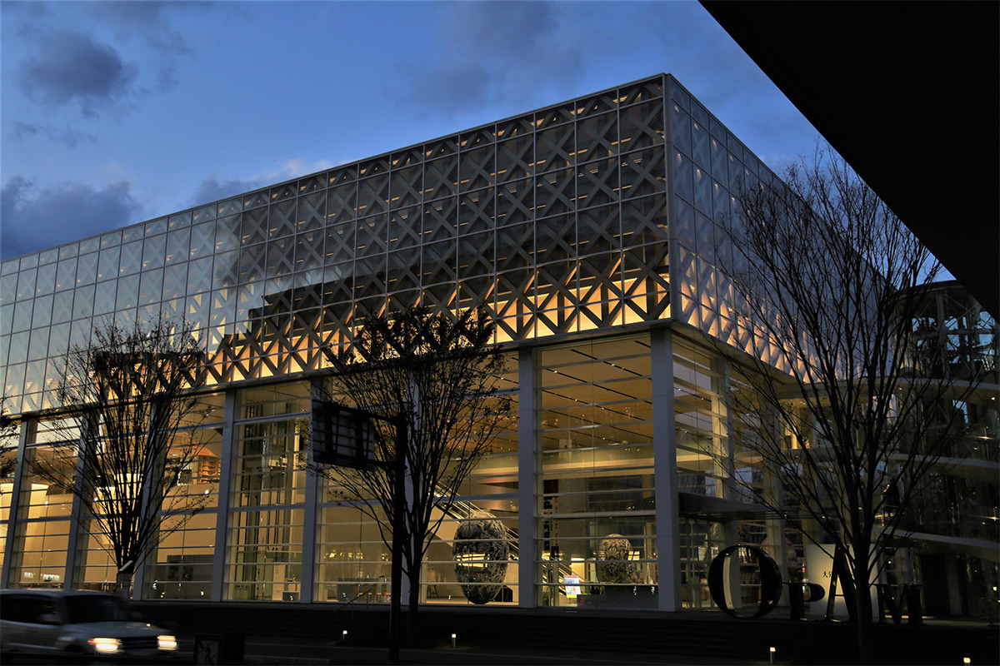

Префектура Оита · город Оита · архитектура
OPAM в городе Оита: музей Сигэру Бана, открытый улице, как веранда японского дома

Префектуральный художественный музей Оиты все зовут просто OPAM. Архитектор Сигэру Бан задумал его как энгаву, открытую веранду японского дома, только выходит она не в сад, а на городскую улицу.
Музей
Встречи и пять чувств
От станции JR Оита до музея идти около 15 минут. Ещё издалека с дороги видна его эмблема, и с самого открытия у неё фотографируются.

Короткое имя придумали, чтобы новый музей запомнили во всём мире: это первые буквы английского названия Oita Prefectural Art Museum. Букву «O» нарисовали кругом, похожим на солнце, а «A» вытянули вверх, к небу. Знак как будто движется, и так в нём выражена идея разнообразия.
У музея три принципа: встречи и пять чувств, музей как собственная гостиная и музей, который растёт вместе с жителями префектуры. Выставки здесь строят вокруг встреч: Оита и мир, классика и современность, живопись и музыка. Кроме временных выставок, в музее показывают постоянную коллекцию о традициях и культуре Оиты, проводят мастер-классы, на которых искусство осваивают всем телом, и много занятий в школах.
Оита дала Японии многих мастеров. Тикудэн Таномура (1777–1835) был ведущим художником школы бунго-нанга, местной ветви китайской по духу живописи литераторов. Хэйхатиро Фукуда (1892–1974) и Тацуо Такаяма (1912–2007) прославились в живописи нихонга, Фумио Асакура (1883–1964) стал одним из первых японских скульпторов западной школы, а Сёунсай Сёно (1904–1974) поднял плетение из бамбука до уровня высокого искусства. В фондах музея около 5000 работ, среди них важные культурные ценности страны. Это собрание музей унаследовал от Префектурального дома искусств Оиты, который копил его 37 лет: старая живопись, нихонга и масло нового времени, традиционные ремёсла, скульптура.
Архитектура
Где кончается улица и начинается музей


Главная идея проекта: музей как энгава, открытая городу. Сигэру Бан объяснял её так: обычно музей похож на чёрный ящик, снаружи непонятно, что в нём происходит, хотя на самом деле радоваться ему должно гораздо больше людей. Поэтому он строил место, куда горожанин может зайти просто отдохнуть, даже не собираясь на выставку.
Здание целиком одето в стекло, а решётка на фасаде напоминает плетёные изделия из бамбука, которыми славится Оита. Южная стена, обращённая к главной улице, собрана из горизонтальных стеклянных створок, которые складываются. Когда их открывают, вестибюль превращается в ту самую веранду. Сразу за входом гостей встречает огромное яйцо, которое медленно покачивается: это «Евразийский садовый дух» нидерландского дизайнера Марселя Вандерса.
Первый этаж: атриум без билета

На первом этаже атриум высотой 10 метров. Стены прозрачные, так что с улицы видно, что внутри. Здесь стоят работы, которые можно смотреть бесплатно, и работает музейный магазин. В 2022 году он продавал вещи под девизом «искусство, которое носят, которым играют и которое едят»: собственные товары OPAM, сделанные вместе с художниками в основном из Оиты, каталоги прошлых выставок и книги об искусстве. Информационная стойка и магазин стоят на колёсах, поэтому зал можно перестраивать как угодно.
Второй этаж: книги для глаз и кафе
На втором этаже информационный уголок с библиотекой, которую собирали по собственным темам: определители минералов и растений, из которых делают краски, книги о природе, о жизни в Оите и о японском характере. Много изданий, которые интересно просто листать, поэтому этот уголок называют «книжной галереей для глаз». Тут же работает кафе, где можно поесть до или после выставки или назначить встречу. Для потолка, стен и пола взяли много природных материалов Оиты, и в залах чувствуется тепло дерева и характер здешних мест.
Кафе называется café Charité. Здесь спокойно, а в меню блюда и сладости из продуктов, происхождение которых тщательно выбирают. Интерьер кафе тоже придумал Сигэру Бан: в нём использованы его знаменитые картонные трубы.
Третий этаж: деревянная волна и небесный сад


Потолок третьего этажа плавно изгибается волной. Его деревянный каркас напоминает бамбуковое плетение, а сквозь него во внутренний двор падает дневной свет. Отсюда вблизи видна и решётка фасада, которая делает здание таким запоминающимся. Диагональная решётка собрана из кедра, выращенного в префектуре. За ней стоят колонны из стали и огнестойкого клеёного бруса лиственницы, а снаружи всё закрывает стеклянная навесная стена. Пол выложен камнем из Хиты, тоже местным. Столы и стулья в музее спроектировал сам Бан.

OPAM открыт каждый день. Вход в атриум бесплатный, а билет на постоянную коллекцию в 2022 году стоил 300 иен для взрослых и 200 иен для студентов и старшеклассников, школьники до средней школы включительно проходят бесплатно.
Префектуральный художественный музей Оиты (OPAM)
- Адрес
- префектура Оита, город Оита, Котобуки-мати, 2-1
- Телефон
- +81 97-533-4500
- Часы работы
- 10:00–19:00, в пятницу и субботу до 20:00 (вход за 30 минут до закрытия)
- Выходные
- без выходных
- Цены / Вход
- постоянная коллекция: взрослые 300 иен (250 иен в группе от 20 человек), студенты и старшеклассники 200 иен (150 иен), до средней школы включительно бесплатно
- Как добраться
- 15 минут пешком от станции JR Оита
- Сайт
- opam.jp
Фото: kai.